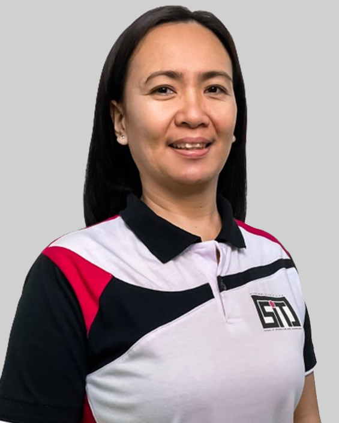

Faculty
Meet the experts shaping the future of IT.
Ms. Lei M. Casiple
Dean, School of Information and Technology
About
- Bachelor of Science in Computer Science
- Master in Information Technology
- Member, Philippine Society of Information Technology Educators
- Member, Philippine Computer Society
- Member, Computing Society of the Philippines
- Full-Time Faculty

Ms. Sheryll E. Grimaldo
Adviser, School of Information and Technology
About
- Bachelor of Science in Computer Science
- Master in Information Technology
- Member, Philippine Society of Information Technology Educators
- Member, Philippine Computer Society
- Member, Computing Society of the Philippines
- Full-Time Faculty
Ms. Chenee A. Naluz
Program Chairperson, School of Information and Technology
About
- Bachelor of Science in Computer Science
- Master in Information Technology
- Member, Philippine Society of Information Technology Educators
- Member, Philippine Computer Society
- Member, Computing Society of the Philippines
- Full-Time Faculty
Mr. Casey Jasper A. Chavez
Adviser, Junior Philippine Computer Society
About
- Bachelor of Science in Information Technology
- Member, Philippine Society of Information Technology Educators
- Member, Philippine Computer Society
- Member, Philippine Institute of Cybersecurity Professionals
- Member, Computing Society of the Philippines
- Member, ICT Industry Council of the Philippines
- Member, Computer Science Teachers Association Philippines
- Master in Information Technology - Candidate
- Full-Time Faculty
Ms. Wency N. Jorda
School of Information and Technology
About
- Bachelor of Science in Computer Science
- Treasurer, Multimedia Arts Association of Philippines
- Member, Integrated Society of Information Technology Enthusiasts - ISITE Inc